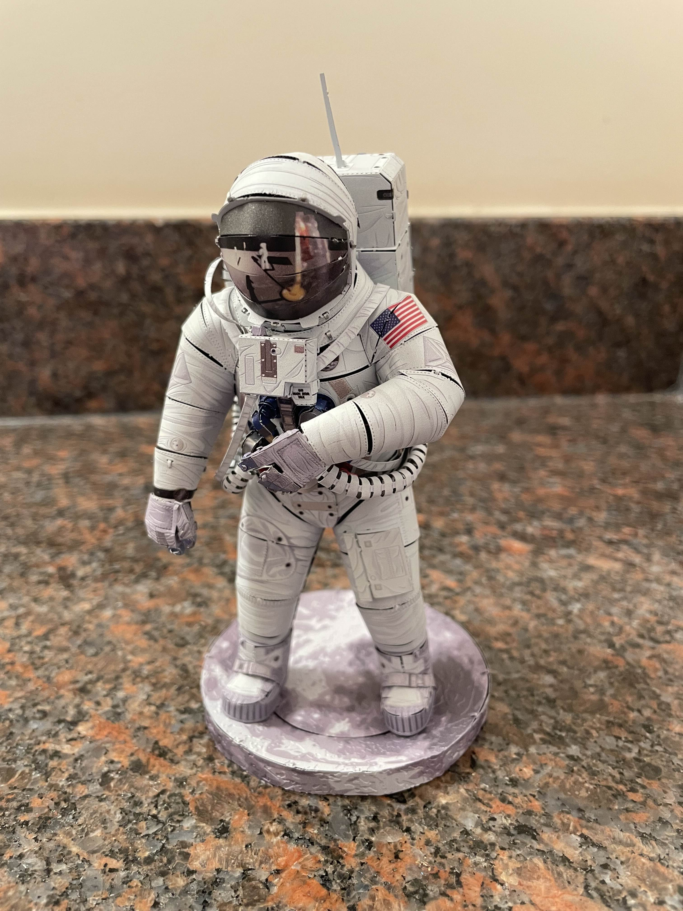
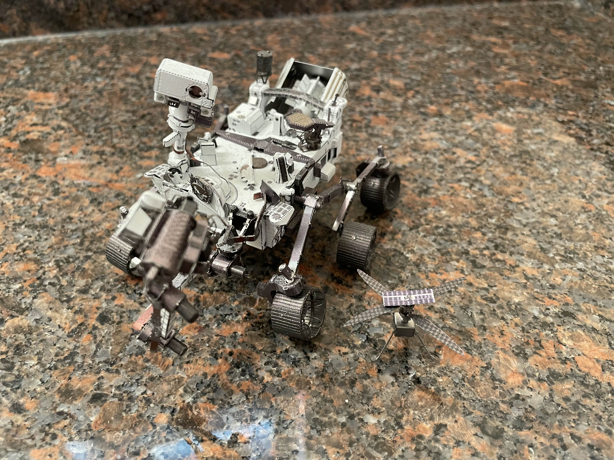
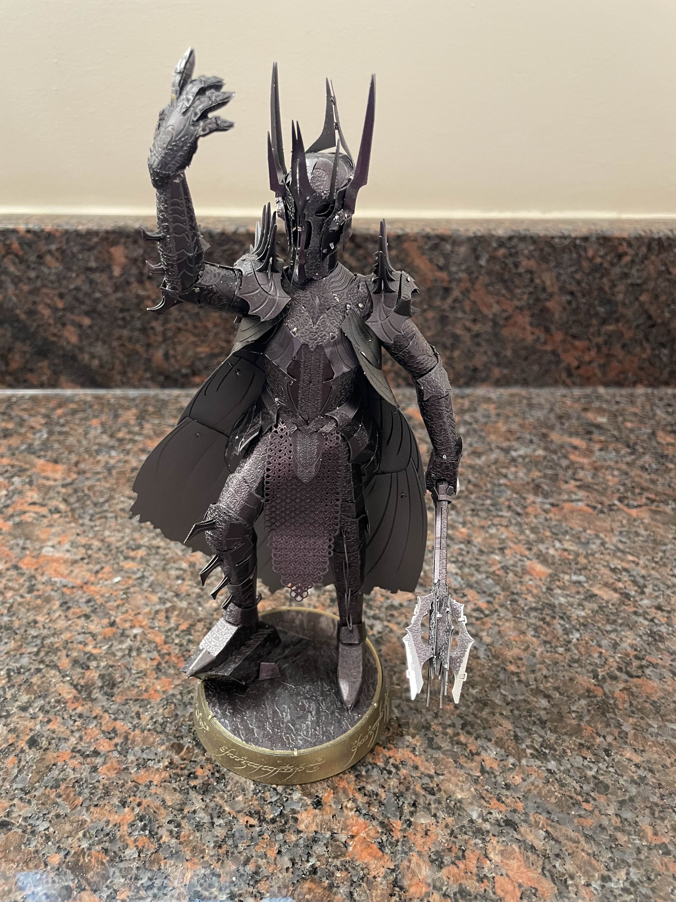

Metal Earth Sculptures
Metal Earth Scupture of Buzz Aldrin on the Moon
This metal sculpture is a 3-Dimensional representation of the famous photo that Neil Armstrong took of Buzz Aldrin on July 20, 1969 during Apollo 11. Neil Armstrong and the lunar lander can be seen in the reflection of Buzz Aldrin's helmet.

Metal Earth Scupture of The Flying Dutchman
The Flying Dutchman was a legendary ghost ship that was said to be doomed to sail the seas forever and that sighting the ship was considered a portent of doom. The legendary ship is believed to be a 17th-century Dutch fluyt. The phantom sightings are believed to be caused by superior mirages from a ship sailing on the horizon.

Metal Earth Scupture of the Perseverance Rover and Ingenuity Helicopter
The Perseverance rover is a Martian rover that landed in the Jezero Crater on Mars in February 2021 to study the ancient river delta for signs of past microbial life. The Ingenuity helicopter was the first aircraft to make a sustained, powered flight on another planet. It's first flight was on April 19, 2021 and flew 72 times before the helicopter's propellers were damaged. Ingenuity is currently being used as a stationary weather station, documenting Martian weather and dust patterns in the event that future rovers, aircraft, or astronauts retrieve the helicopter.

Metal Earth Scupture of Sauron
Sauron is the main antagonist of The Lord of the Rings trilogy written by J.R.R. Martin. The sculpture is a model of the film version of Sauron created by Weta Workshop, New Line Cinema, and Peter Jackson for the 2001 blockbuster The Lord of the Rings: The Fellowship of the Ring. This scultpure includes the mace Sauron used in the beginning of the movie during the prologue.